Questionário
1. Introdução
O questionário, ou pesquisa, é um método que consiste na aplicação de um questionário às partes interessadas e posterior análise da resposta. É uma técnica que tem como objetivo coletar informações quantitativas e qualitativas de um público alvo numeroso.
2. Metodologia
Foram elaboradas 17 questões relacionadas a carteira de trabalho digital, sendo que, as 8 primeiras, todas as pessoas que estiverem preenchendo o questionário devem responder. Depois dessas 8, dividimos o questionário em duas seções diferentes onde em uma delas a pessoa já teria utilizado o aplicativo e, em outra, a pessoa não o teria utilizado.
3. Resultados
No total foram coletadas 47 respostas.
Pergunta 1
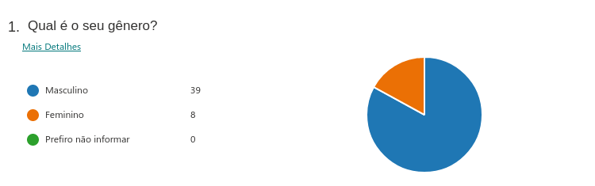
Pergunta 2
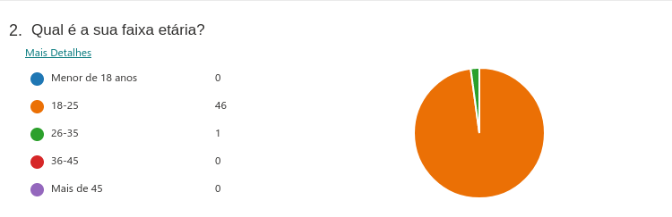
Pergunta 3
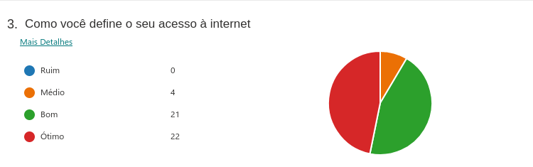
Pergunta 4

Pergunta 5
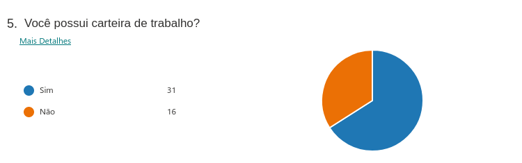
Pergunta 6

Pergunta 7
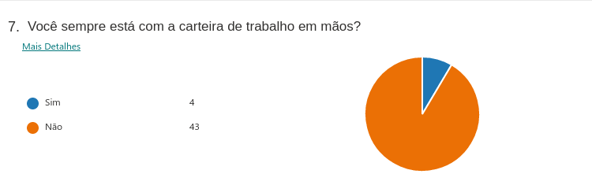
Pergunta 8
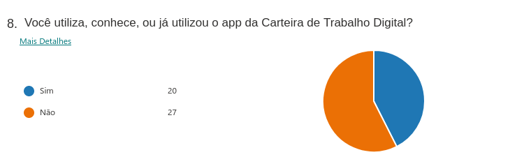
Perguntas para quem já utilizou o app
Pergunta 9
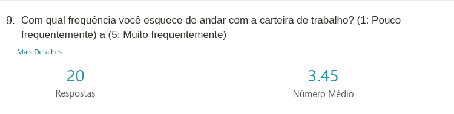
Pergunta 10
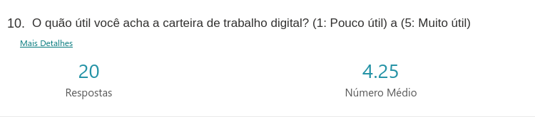
Pergunta 11
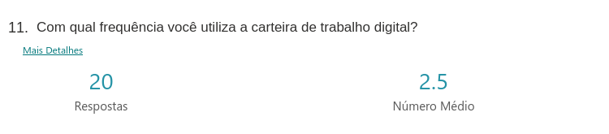
Pergunta 12
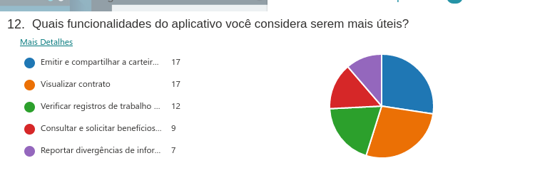
Pergunta 13
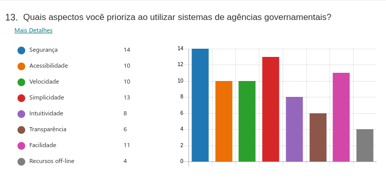
Pergunta 14
Quais aspectos você acredita que precisam melhorar no app?
Algumas respostas:
- Os dados mostrados quando não há nenhum registro;
- Reportar divergências de informações no contrato não funciona;
- O design da carteira gerada em PDF;
- Tamanho do App. Como a carteira de trabalho não tem tantas atualizações, poderia ser facilitado o acesso online, sem necessidade de baixar o app;
- Diminuir a quantidade de bugs;
- Melhorar divulgação do app;
Perguntas para quem nunca utilizou o app:
Pergunta 15
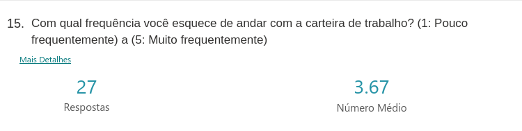
Pergunta 16
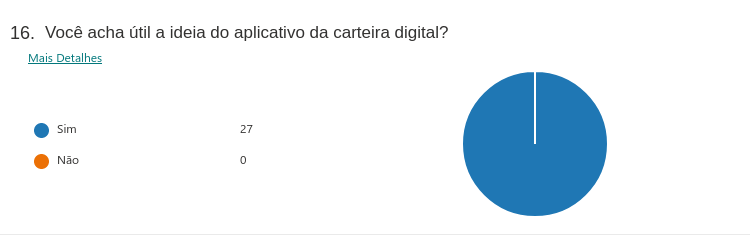
Pergunta 17
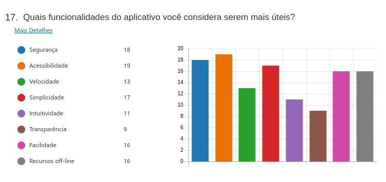
4. Conclusão
De acordo com as respostas do questionário, podemos perceber que a Carteira de Trabalho Digital é um aplicativo considerado muito útil pela maioria das pessoas. Percebe-se também que as pessoas quase não carregam esse documento físico, não estando preparadas para alguma situação inesperada. Dentre as funcionalidades principais, as mais utilizadas são: emitir e compartilhar a carteira em pdf, visualizar contratos e verificar registros de trabalho. Também foi notado que nem tantas pessoas tinham o conhecimento sobre a existência do aplicativo e isso desmotiva os desenvolvedores a estarem atualizando a aplicação. Logo, os requisitos não são constatemente reavaliados.
5. Requisitos
Depois de avaliar e tirar a conclusão sobre o questionário, pudemos levantar alguns requisitos da aplicação:
| Número | Requisito | Tipo de Requisito |
|---|---|---|
| 1 | Permitir a emissão da carteira de trabalho em PDF | Funcional |
| 2 | Visualizar contratos de trabalhos antigos e atuais | Funcional |
| 3 | Verificar registros de trabalho(férias, recisão de contrato e etc.) | Funcional |
| 4 | Reportar divergências de informaçoes do contrato | Funcional |
| 5 | Possuir login integrado com o sistema GOV.br | Funcional |
| 6 | Melhorar o design da carteira em PDF | Não Funcional |
| 7 | Diminuir o tamanho do app, ou fazer uma versão web | Não Funcional |
| 8 | Ser seguro | Não Funcional |
| 9 | Ser acessível | Não Funcional |
| 10 | Ser simples | Não Funcional |
| 11 | Ser de fácil utilização | Não Funcional |
6. Versionamento
| Versão | Descrição | Data | Autor(es) | Revisor(es) |
|---|---|---|---|---|
| 1.0.0 | Criação do documento com os resultados do questionário de elicitação e os requisitos levantados | 19/08/2021 | Murilo Gomes e Giulia Lobo | Denniel William e Rhuan Marques |